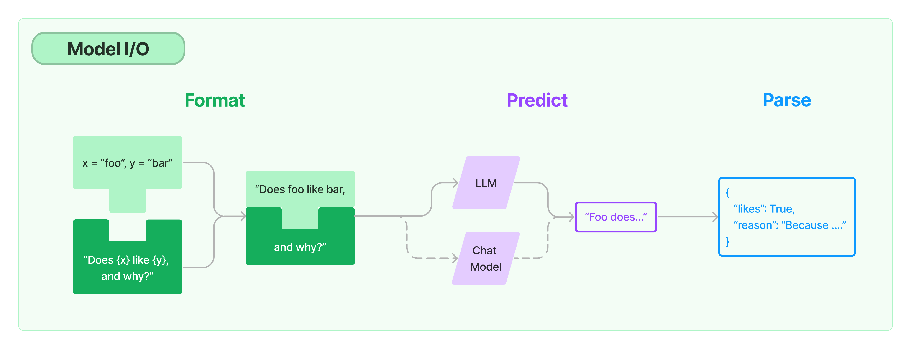
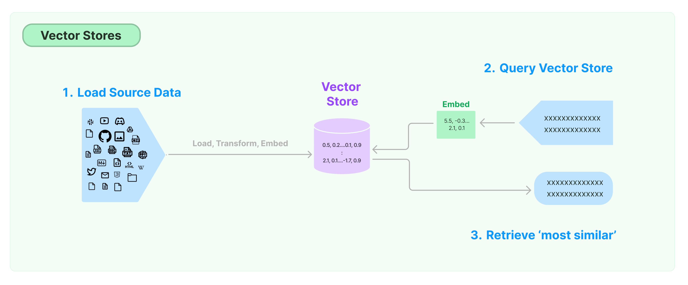

langChain大模型开发
- 如何使用 LangChain：一套在大模型能力上封装的工具框架
- 如何用几行代码实现一个复杂的 AI 应用
- 面向大模型的流程开发的过程抽象
写在前面
- LangChain 是一套面向大模型的开发框架
- LangChain 是 AGI 时代软件工程的一个探索和原型
- LangChain 并不完美，还在不断迭代中：我写这个课件的时候是 V0.0.200，现在是 V0.0.241
- 学习 LangChain 更重要的是借鉴其思想，具体的接口可能很快就会改变
LangChain是一个基于语言模型开发应用程序的框架，旨在帮助开发人员使用大型语言模型（LLM）构建端到端的应用程序。它提供了一套工具、组件和接口，可简化创建由LLM和聊天模型提供支持的应用程序的过程。LangChain可以轻松管理与语言模型的交互，将多个组件链接在一起，并集成额外的资源，如API和数据库。
LangChain的核心价值在于其组件化特性，为使用语言模型提供抽象层，以及每个抽象层的一组实现。这些组件是模块化且易于使用的，无论是否使用LangChain框架的其余部分。
此外，LangChain的优势在于可以重新利用语言模型。借助LangChain，组织可以将LLMs重新用于特定领域的应用程序，而无需重新训练或微调。这为AI开发者提供了连接语言模型和外部数据源的工具，从而解决语言处理领域中的一系列挑战。
总的来说，LangChain是一个功能强大且灵活的框架，为开发人员提供了一个创新的工具集，用于构建基于LLM的应用程序，并扩展LLM的使用场景。它得到了开源社区的支持，并且是免费的，为开发者提供了与其他精通该框架的开发人员交流和支持的机会。
LangChain 的核心组件
- 模型 I/O 封装
- LLMs：大语言模型
- Chat Models：一般基于 LLMs，但按对话结构重新封装
- PromptTemple：提示词模板
- OutputParser：解析输出
- 数据连接封装
- Document Loaders：各种格式文件的加载器
- Document transformers：对文档的常用操作，如：split, filter, translate, extract metadata, etc
- Text Embedding Models：文本向量化表示，用于检索等操作（啥意思？别急，后面详细讲）
- Verctor stores: （面向检索的）向量的存储
- Retrievers: 向量的检索
- 记忆封装
- Memory：这里不是物理内存，从文本的角度，可以理解为“上文”、“历史记录”或者说“记忆力”的管理
- 架构封装
- Chain：实现一个功能或者一系列顺序功能组合
- Agent：根据用户输入，自动规划执行步骤，自动选择每步需要的工具，最终完成用户指定的功能
- Tools：调用外部功能的函数，例如：调 google 搜索、文件 I/O、Linux Shell 等等
- Toolkits：操作某软件的一组工具集，例如：操作 DB、操作 Gmail 等等
- Callbacks
1
|
!pip install langchain == 0.0.240rc4
|
1
2
3
4
5
6
7
8
9
10
11
12
13
14
15
16
17
18
19
20
21
22
23
24
25
26
|
from langchain.llms import OpenAI
from langchain.chat_models import ChatOpenAI
llm = OpenAI() # 默认是text-davinci-003模型
llm.predict("你好，欢迎")
# '你好！感谢您的欢迎。有什么我可以帮助您的吗？
from langchain.schema import (
AIMessage,
HumanMessage,
SystemMessage
)
chat_model = ChatOpenAI() #默认是gpt-3.5-turbo
chat_model.predict("你好，欢迎")
messages = [
SystemMessage(content="你是AGIClass的课程助理。"),
HumanMessage(content="我来上课了")
]
chat_model(messages)
|
1.2 模型的输入与输出

PromptTemplate
1
2
3
4
5
|
from langchain.prompts import PromptTemplate
template = PromptTemplate.from_template("给我讲个关于{subject}的笑话")
print(template.input_variables)
print(template.format(subject='小明'))
|
1
2
3
4
5
6
7
8
9
10
11
12
13
14
15
16
17
18
19
20
21
22
23
24
25
26
27
28
29
30
31
32
33
34
35
36
37
38
39
40
41
42
43
44
45
46
47
48
49
50
51
52
53
54
55
56
57
58
59
60
61
62
63
64
|
from langchain.prompts import PromptTemplate, ChatPromptTemplate, HumanMessagePromptTemplate
from langchain.llms import OpenAI
from langchain.output_parsers import PydanticOutputParser
from pydantic import BaseModel, Field, validator
from typing import List, Dict
import json
def chinese_friendly(string):
lines = string.split('\n')
for i, line in enumerate(lines):
if line.startswith('{') and line.endswith('}'):
try:
lines[i] = json.dumps(json.loads(line), ensure_ascii=False)
except:
pass
return '\n'.join(lines)
model_name = 'gpt-4'
temperature = 0.0
model = OpenAI(model_name=model_name, temperature=temperature)
# 定义你的输出格式
class Command(BaseModel):
command: str = Field(description="linux shell命令名")
arguments: Dict[str, str] = Field(description="命令的参数 (name:value)")
# 你可以添加自定义的校验机制
@validator('command')
def no_space(cls, field):
if " " in field or "\t" in field or "\n" in field:
raise ValueError("命令名中不能包含空格或回车!")
return field
parser = PydanticOutputParser(pydantic_object=Command)
prompt = PromptTemplate(
template="将用户的指令转换成linux命令.\n{format_instructions}\n{query}",
input_variables=["query"],
partial_variables={"format_instructions": parser.get_format_instructions()}
)
print(chinese_friendly(parser.get_format_instructions()))
query = "将系统日期设为2023-04-01"
model_input = prompt.format_prompt(query=query)
#print(parser.get_format_instructions())
print("====Prompt=====")
print(chinese_friendly(model_input.to_string()))
output = model(model_input.to_string())
print("====Output=====")
print(output)
print("====Parsed=====")
cmd = parser.parse(output)
print(cmd)
|
文档向量化
1
2
3
4
5
6
7
8
9
10
11
12
|
from langchain.embeddings import OpenAIEmbeddings
embeddings = OpenAIEmbeddings()
text = "这是一个测试"
document = "测试文档"
query_vec = embeddings.embed_query(text)
doc_vec = embeddings.embed_documents([document])
print(len(query_vec))
print(query_vec[:10]) # 为了展示方便，只打印前10维
print(len(doc_vec[0]))
print(doc_vec[0][:10]) # 为了展示方便，只打印前10维
|
2.4 向量的存储（与索引）：Vectorstores

1
2
3
4
5
6
7
8
9
|
from langchain.embeddings.openai import OpenAIEmbeddings
from langchain.vectorstores import FAISS
embeddings = OpenAIEmbeddings()
db = FAISS.from_documents(paragraphs, embeddings)
query = "What can ChatGPT do?"
docs = db.similarity_search(query)
print(docs[0].page_content)
|
VectorDB建议：
没有极端高性能要求的，FAISS比较常用
Pinecone（付费-云服务）易用性比较好
有极端性能要求的，可以找专人优化ElasticSearch（或APU加速）
一些对比分析可参考：https://www.modb.pro/db/516016
2.5 向量检索：Retrievers
1
2
3
4
|
retriever = db.as_retriever()
docs = retriever.get_relevant_documents("What can ChatGPT do?")
print(docs[0].page_content)
|
如果不用向量检索会怎样？
1
2
3
4
5
6
|
from langchain.retrievers import TFIDFRetriever # 最传统的关键字加权检索
retriever = TFIDFRetriever.from_documents(paragraphs)
docs = retriever.get_relevant_documents("What can ChatGPT do?")
print(docs[0].page_content)
|
思考：为什么向量检索效果更好？